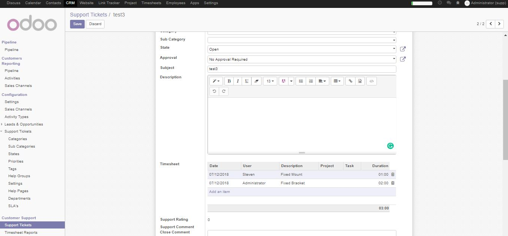
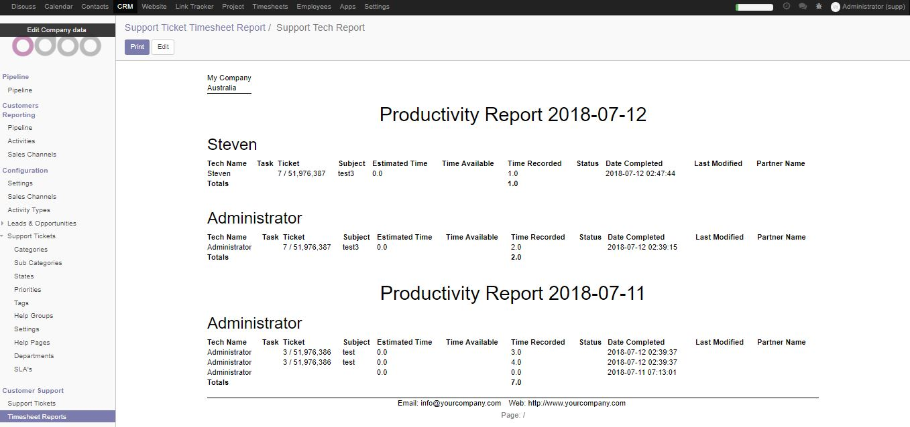

Description
Track time spend on tickets
Have a record of the amount of time that gets spent on support tickets

Tech Report
Display a report that breaks down each techs activities (Task / Support Ticket) by day
CRM->Timesheet Reports->Print->Support Tech Report
